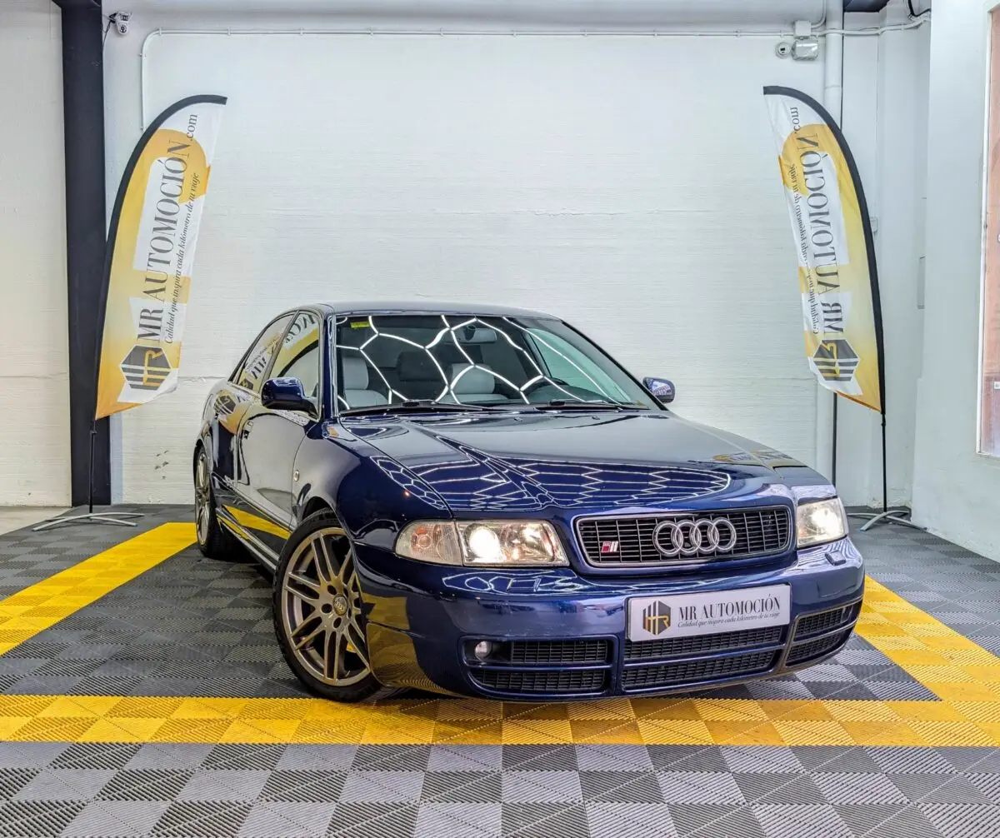

1 / 24Una oportunidad única para coleccionistas y entusiastas de la época dorada de Audi Sport. Ponemos a la venta este espectacular e icónico Audi S4 Berlina (Generación B5) , matriculado en diciembre de 1998 . Una unidad muy cuidada con 201.190 km reales, que conserva intacto todo el carácter purista de los años 90 combinado con sutiles mejoras de rendimiento completamente homologadas.
Motor y Prestaciones Legendarias Bajo el capó late uno de los bloques más respetados y con mayor potencial de la firma de los cuatro aros: Mecánica Bi-Turbo: Motor gasolina 2.7 V6 de 5 válvulas por cilindro con doble turbocompresor (Código AGB) , que desarrolla 265 CV de potencia y una entrega de par contundente y elástica.
Configuración Purista: Caja de cambios manual de 6 velocidades con un guiado preciso y directo, asociada al infalible sistema de tracción integral permanente Quattro con diferencial central Torsen, garantizando una motricidad perfecta en cualquier circunstancia. Dinámica Optimizada y Mejoras Homologadas Esta unidad ha recibido mejoras en su parte ciclo para afinar su comportamiento sin comprometer la legalidad ni la comodidad: Suspensión Deportiva KW: Equipado con muelles deportivos de la prestigiosa marca KW que rebajan el centro de gravedad del vehículo.
La nueva altura de la carrocería (1.354 mm) está totalmente legalizada e inscrita en las reformas autorizadas de la Ficha Técnica , garantizando un paso por curva espectacular y una ITV 100% libre de problemas. Llantas y Neumáticos Premium: Luce unas espectaculares llantas de aleación de 18 pulgadas con diseño de radios dobles en un acabado bronce/gunmetal, calzadas con neumáticos de alta gama Continental PremiumContact 6 en medida 225/40 R18.
Interior de Alta Costura y Equipamiento El habitáculo es un reflejo perfecto del lujo deportivo de la época, manteniendo un estado de conservación excepcional: Exclusivo Cuero Blanco: Asientos deportivos Recaro originales tapizados íntegramente en un precioso cuero blanco , creando el contraste más elegante y cotizado posible con la pintura exterior azul oscuro metalizado.
Inserciones en Fibra de Carbono: Molduras decorativas en fibra de carbono real que recorren las puertas y el salpicadero, enmarcando con distinción el legendario logotipo "Quattro" sobre la guantera. Sistema de Sonido BOSE: Equipo de audio premium de alta fidelidad original de fábrica con una acústica limpia y envolvente.
Multimedia Actualizada: Incorpora una unidad Pioneer con pantalla táctil motorizada desplegable (1-DIN), que aporta conectividad moderna, manos libres y reproducción de medios actuales sin romper la armonía del salpicadero clásico. Volante deportivo de 3 radios forrado en cuero con el emblema S, climatizador automático digital con display en el clásico rojo de la marca, reposabrazos central delantero y elevalunas eléctricos en las cuatro puertas.
Tu Compra Segura con MR Automoción Llévate a casa una berlina clásica en constante revalorización con la máxima transparencia y seriedad: ✅ Mantenimiento al Día: Vehículo revisado exhaustivamente por nuestro equipo. ✅ Kilometraje Certificado: 201.190 km reales garantizados. ✅ Transferencia Incluida: Precio final llave en mano, sin sorpresas ni costes ocultos. ✅ Posibilidad de financiación a tu medida.
| Marca | Audi |
|---|---|
| Modelo | AUDI S4 (B5) 2.7 V6 Bi-Turbo Quattro 265 CV |
| Año | Dic 1998 |
| Kilómetros | 201.190 km |
| Combustible | Gasolina |
| Cambio | Manual |
| Potencia | 265 CV |
| IVA | NO DEDUCIBLE |
Quizá también te encaje